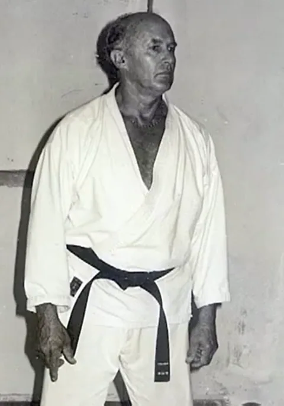

1932
ראשית הדרך בדרום אפריקה
סידני שלמה פייגה נולד בדרום אפריקה בשנת 1932. לאחר גירושי הוריו, בהיותו בן שבע, עבר לגור עם אביו בבית מלון. אביו היה חייל, ולכן פגש אותו רק בסופי שבוע.
כילד יהודי שגדל לבד, הוא נאלץ להגן על עצמו לא מעט — וזו הסיבה שבגללה התחיל ללמוד אומנויות לחימה. הצורך להילחם ולהגן על עצמו המשיך גם כשהתגייס לצבא, שם היה היהודי היחיד מבין 600 חיילים בפלוגתו. בשירותו הצבאי נחשב ללוחם קשוח וזכה להערכה רבה.
